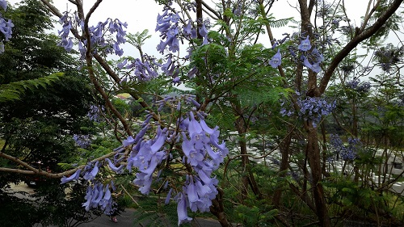
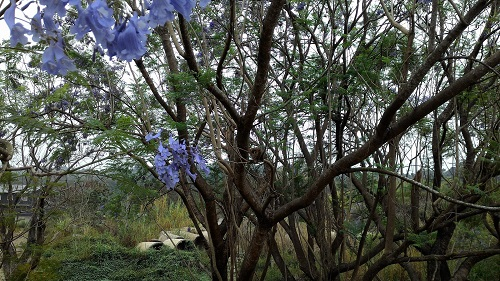

遊記-藍花楹隧道
出社會以後，家人相聚的時間就減少了，大家都各自在不同的世界打拼 趁著母親節的前夕，好久不見的姐姐，避開人潮提前從北部回來幫媽媽慶祝 星期五晚上，回到家裡的姐姐，拉著我要我載她去拿蛋糕 說她訂了一個超漂亮的母親節蛋糕，我們就到勤美誠品地下一樓去拿 這蛋糕真的是非常精細，用巧克力做成的花瓣，上面還有果糖做的水珠，非常漂亮 !吃完蛋糕我們就早早休息，因為隔天還要出發去嘉義一日遊。
星期六早上，我們整裝待發，準備前往嘉義 旅行計畫由姐姐一手包辦，查尋了網路上的許多景點 最後決定帶著媽媽去欣賞位於嘉義的藍花楹隧道 據說還是個新景點，比較少人知道的私房景點。
而至於交通則是我負責，學會開車以後，實際上路的機會並不多 所以這次旅遊，也是我的一大挑戰! 之前最遠只有從台中開到彰化，這次要往下推延到嘉義去了 檢查好輪胎、水箱等，我們就出發了 一路上聊了許多兒時回憶，和家人在一起就是有種安心的感覺。
保持著安全距離，約一個半小時以後，我們首先抵達古坑休息站 原本以為休息站只是個給駕駛人休息的地方，想不到意外的遼闊 有許多商家不說，裝置藝術，充電站都有，都可以當一個景點來玩了。 我家媽媽因為喜歡咖啡，來到古坑當然要開心的大肆採購XD 很多特別的商品琳瑯滿目，我們拜了不少戰利品 服務中心外頭還有巨大的西洋棋裝置藝術，是非常理想的拍照景點。
稍作休息後，我們前往今天的主要目標一藍花楹隧道 說是隧道，其實是一條不長的路，路旁種滿藍花楹，花況還不錯 藍紫色的花朵在視野蔓延開來，遍地也是一點一點的藍色點綴，上下呼應相當漂亮，花朵有一種特殊味道，不算好聞。

沿途有棵巨大的樹，樹上有個鳥窩，媽媽笑稱牠選了一個視野很好的家，花景第一排XD

路上還看到遊客騎著腳踏車，車上還載著兩隻鸚鵡 毛色鮮豔非常漂亮，主人正在幫他的寵物拍照 假日出門騎車溜"鳥"，也是十分有趣的事。

走完隧道，我們便驅車前往嘉義市區享用午餐 在東區的一間蔬食餐廳，菜色豐富，店也蠻乾淨明亮的 牆上有許多蔬菜擬人化的小插圖，非常可愛。 飽餐一頓之後，稍作休息，我們前往民雄鬼屋咖啡廳一探究竟 狹小的巷弄裡佇立著一間咖啡廳，其旁邊就是大名鼎鼎的民雄鬼屋 老舊的房子爬滿了樹枝藤蔓，打破碗的女傭、自殺的日軍等傳說就是在這裡 聽說屋子主人在當時是相當富有的人家 但由於地處偏遠，子孫皆到外地工作，才逐漸沒落 許多鬼怪傳聞也只是後人穿鑿附會之詞而已。 時過境遷，房子依舊佇立在樹林裡，見證著歷史的洪流 向著三不五時到訪的遊客，訴說著古老的故事。 喝完咖啡，聽完故事的我們，準備告別老房子，啟程返家，結束這躺旅程。 人生苦短，及時行樂 離開家以後，越發珍惜和家人相聚的時間 多一些片刻，都是以後珍貴的回憶 下一次要去哪裡?開始計畫吧!